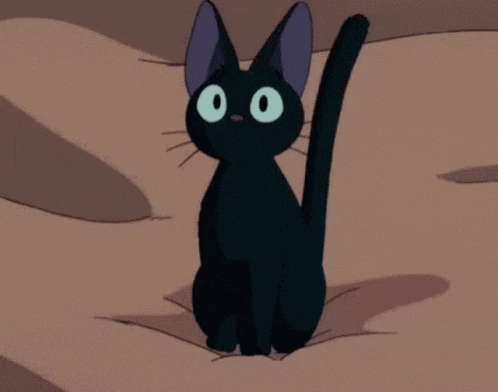
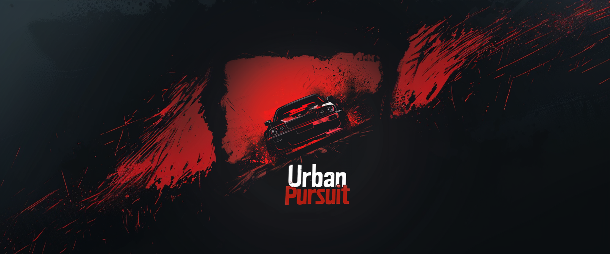

7empest15
Développeur et étudiant. Je maitrise plusieurs langages mais me concentre sur l'environnement FiveM.
Compétences
Java
Lua
JavaScript
Projets

Urban Pursuit
Urban pursuit est un server fivem français de course poursuite type freeroam. Il est fondé par Rebelle et développé par 7empest15.
Rejoindre le projet